AnuPpuccin for Local Markdown Reader
Playful pastel workspace with shaped callouts and pill controls.
Theme packageGenerated previews for 10 Obsidian-inspired original remote theme packages.

Playful pastel workspace with shaped callouts and pill controls.
Theme packageInformation-rich research theme with dense tables and data panels.
Theme packageSoft palette theme with editor-like code and rounded reading surfaces.
Theme packageHigh-contrast neon console theme with angular chrome and glowing panels.
Theme packageMuted green long-reading theme with warm editorial spacing.
Theme packageDense dashboard and metadata theme for complex technical notes.
Theme packageQuiet writing-first theme adapted for long Markdown reading.
Theme packageBalanced rounded note theme with soft controls and calm callouts.
Theme packageColorful structured note theme with editorial heading markers.
Theme packageNative productivity notes with crisp controls and compact navigation.
Theme package